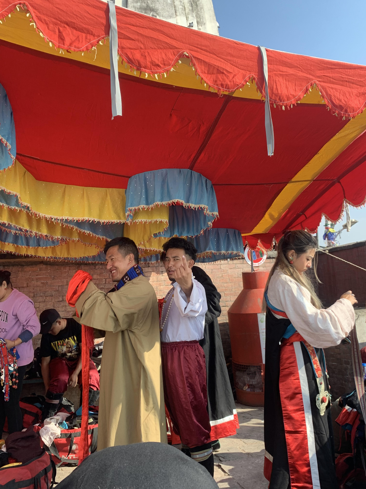

Music helps us travel through every phase of life and Science says that singing releases oxytocin that helps release stress and anxiety. But, that’s not all, singing is a fun and anywhere activity. There are different forms of songs and folk song is a unique one. Since NTLA is working towards promoting and safeguarding Tibetan Culture, you can learn a lot about Tibetan folk music and Tibetan folk songs here. NTLA has different courses starting from basic level ranging up to advanced courses that teach you how to sing the Tibetan folk songs with the right melodies, pitch, and instruments. Within the lessons provided on Tibetan folk music at TIPA, you will learn folk songs from three different regions of Tibet. The folk songs from these regions include harvest songs, drinking songs, welcome songs, marriage songs, and ceremonial songs.
NagmaToeshay: Although played throughout Tibet, Toeshay is classical music that is played mostly in the central region of Tibet. This music is very popular and if you want to learn true Tibetan folk music then Toeshay is a must.
-

AMDO DANCE, this dance is from one of the three province of tibet. the attire they are wearing is from the amdo region. it is in the higher altitude of the country.
-

KhHAMPA DANCE, this dance is from on one of the three province of tibet. The attire they are wearing is from the Kham region. It is the lower altitude of tibet.
-

This picture is taken from the dance called"yak dance". It is very popular in tibet as well as the himalayan region of nepal. In this form of dance the poeple disguising themselves as yak are supposed to dance like yak and do stunts which are capable for the yak. There is always the owner ofthe yak with it.
-

This image is from the behind of scene. All the artist are busy wearing their amdo gyonche(dress) fromt he performance. This picture is taken in swayambhu in the opening ceremony of a new monastry.Every one is busy except the camera man.(which is me)